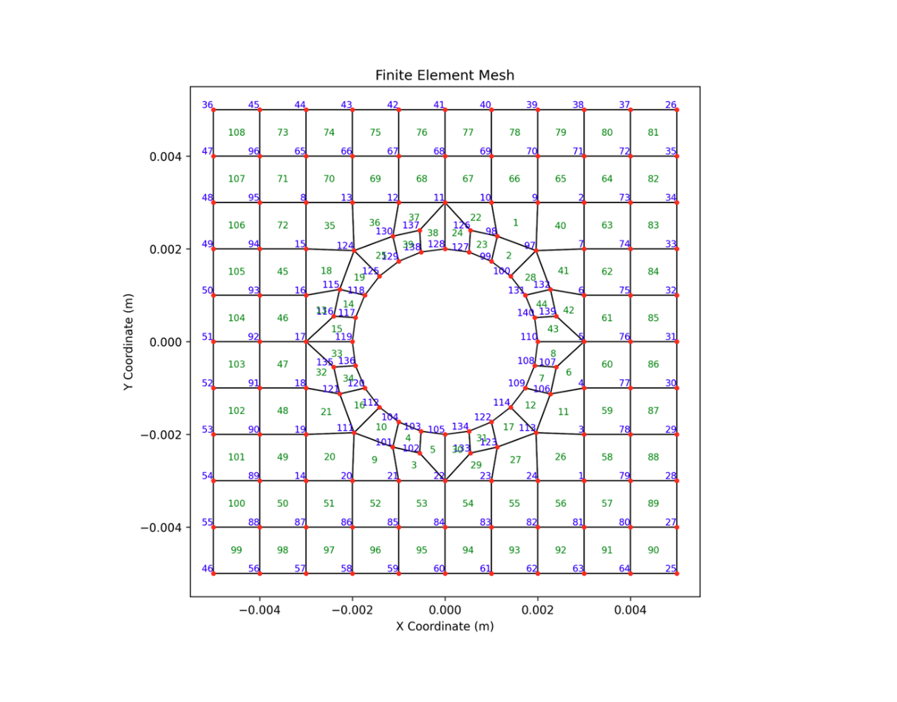
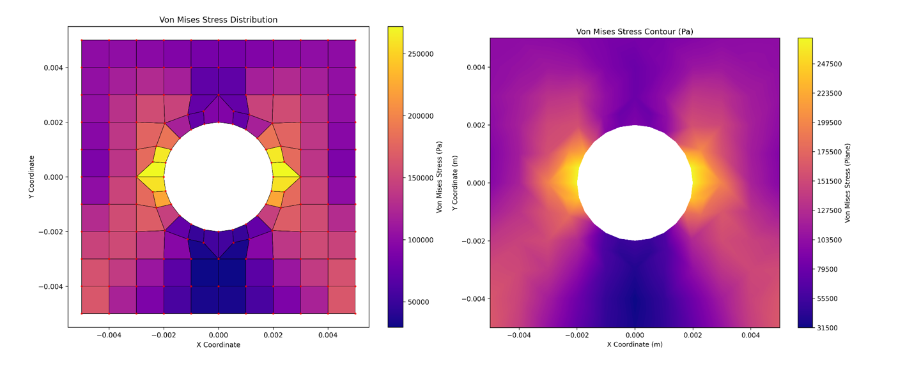
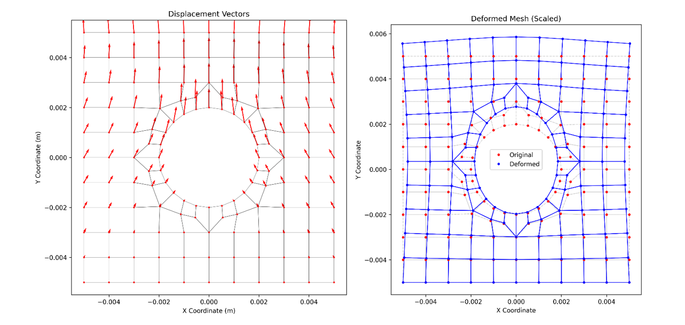

I implemented a 2D finite element solver for a plate with a central hole using 4-node quadrilateral (Quad4) elements. The solver assembles global stiffness, applies boundary conditions, solves nodal displacements, then computes reactions, strains/stresses, and von Mises fields.
What I Built
The code reads mesh and loads, forms element stiffness via Gauss integration, partitions the system into fixed and free DOFs, solves for unknowns, and post-processes stress/strain. Results include displacement vectors, deformed mesh visualization, and von Mises maps/contours.
Formulation
Each Quad4 element uses bilinear shape functions. The Jacobian maps natural to global coordinates to construct the strain–displacement matrix B, and the element stiffness is integrated with a 2×2 Gauss rule under plane-stress assumptions. The constitutive matrix C is defined by E and ν.
Von Mises Stresses
The discrete element-wise von Mises map (left) and a smoothed contour plot (right) highlight stress concentration lobes at the horizontal tangency points of the hole—consistent with classical solutions.
Deformation & Displacements
Left: displacement vectors over the original grid. Right: scaled deformed mesh overlaid on the original to visualize mode and boundary effects around the hole.
Lessons Learned
- Mesh quality and correct Jacobians strongly affect stress accuracy near the hole boundary.
- Partitioning and applying boundary conditions cleanly simplifies verification of reactions.
- Exporting intermediate fields (B, C, element Ks) speeds debugging and validation.